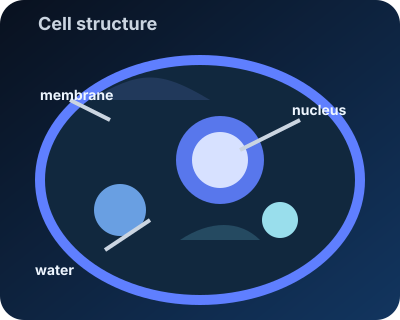
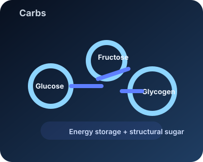
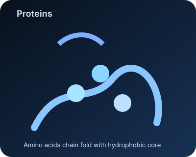
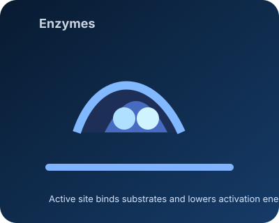
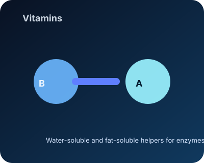
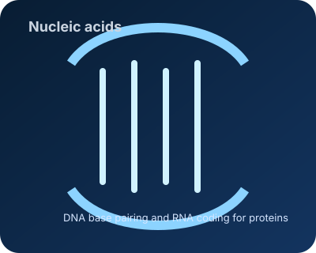

Introduction to Biochemistry
Biochemistry studies the molecules that make life possible. It explains how water, carbohydrates, lipids, proteins, nucleic acids, vitamins, and minerals each work inside cells.
Every biomolecule has a chemical identity: some are polar and dissolve in water, while others are nonpolar and drive membrane structure or protein folding. Together they create the chemistry of living systems.
This subject connects chemistry and biology by showing how atoms assemble into molecules, how those molecules build cells, how reactions release or store energy, and how information is stored and used.
Core chemical concepts: covalent bonds form stable backbones; ionic interactions and hydrogen bonds determine solubility and shape; van der Waals and hydrophobic effects drive packing and membrane formation. Redox reactions (electron transfer) and group transfer reactions are central in metabolism.
Key examples: ATP (energy currency), NAD+/NADH (redox shuttle), phospholipids (membranes), glucose (fuel), amino acids (protein building blocks), and DNA (information storage).
Nursing focus: recognizing abnormal lab values and understanding how fluids, electrolytes, and drugs alter cellular chemistry helps in monitoring patients and making bedside decisions.
What is Biochemistry?
The study of chemical reactions inside living cells, including how biomolecules interact, change shape, and power life.
Biochemical building blocks
- Water: solvent and reaction medium
- Carbs: energy and structure
- Fats: membranes and nonpolar storage
- Proteins: structure, catalysts, signals
- Nucleic acids: genetic code
- Vitamins: enzyme helpers
Why it matters
Biochemistry explains how molecules work together to make cells alive, how food becomes energy, and how DNA controls growth and inheritance.
Cells & Biomolecules
Cells are the functional units of life — compartments where biochemical reactions are organized in time and space. The cytosol is an aqueous solution of ions and polar biomolecules, while membranes form hydrophobic barriers that separate compartments.
Membrane composition: phospholipids (amphipathic) form bilayers with hydrophilic heads and hydrophobic tails; cholesterol modulates fluidity; glycolipids and membrane proteins mediate recognition and transport.
Transport examples: simple diffusion (O2, CO2), facilitated diffusion (glucose transporters), and active transport (Na+/K+ ATPase) which uses ATP to maintain ion gradients essential for nerve signaling and osmotic balance.
Mitochondria: the site of oxidative phosphorylation where electron transport creates a proton gradient used by ATP synthase to produce ATP. Loss of mitochondrial function impairs high-energy tissues like muscle and brain. Clinical links: mitochondrial dysfunction can lead to lactic acidosis and fatigue; nurses monitor lactate, oxygenation, and organ perfusion when suspecting impaired cellular respiration.
Inside every cell, biochemistry connects structure and function: membranes, proteins, carbohydrates, and nucleic acids create compartments, carry signals, and store energy.

Cell membrane
A fluid barrier made of phospholipids with hydrophilic heads and hydrophobic tails. It separates watery inside from the outside and controls molecule movement.
Nucleus
The control center that stores DNA, a polar molecule with a sugar-phosphate backbone and nitrogen bases that carry genetic instructions.
Organelles
Specialized compartments like mitochondria and ribosomes where specific biochemical reactions happen, such as energy production and protein synthesis.
Biochemical environment
Water dissolves polar biomolecules and ions, while nonpolar regions gather inside proteins and membranes to keep the cell organized.
Water, pH, and Buffers
Water is the medium for almost all biochemical reactions. Its polarity and hydrogen-bonding network let it solvate ions and polar groups, stabilize transition states, and support acid–base chemistry.
Example reaction: CO2 + H2O ⇌ H2CO3 ⇌ H+ + HCO3- — the carbonic acid/bicarbonate buffer in blood helps control pH during exercise and breathing adjustments.
pKa and amino acids: side chains like histidine (pKa near physiological pH) can act as proton donors/acceptors in enzyme active sites. Changing pH alters protonation and can switch enzyme activity on or off.
Clinical note: metabolic acidosis (low blood pH) occurs when acids accumulate or bicarbonate is lost; respiratory compensation changes CO2 to restore pH. Normal arterial pH is ~7.35–7.45; nurses use ABGs and BMP electrolytes to detect and manage acid–base disorders.
The pH scale measures the concentration of hydrogen ions. In biochemistry, pH controls the charge of amino acids, the shape of enzymes, and the behavior of molecules like nucleic acids and proteins.
Polar water
Water has a partial positive side at hydrogen atoms and a partial negative side at oxygen. This polarity lets it surround charged biomolecules and support biochemical reactions.
Hydrophobic effect
Nonpolar molecules cluster away from water. This drives lipid membranes to form and proteins to fold with hydrophobic cores.
pH and biomolecules
Changing pH alters the charges on amino acids and nucleotides, which can change protein shape and enzyme activity.
Buffers
Buffers like phosphate and bicarbonate absorb H+ or OH-. They keep cellular pH steady, protecting proteins and maintaining metabolic reactions.
Carbohydrates
Carbohydrates are polyhydroxylated aldehydes or ketones (sugars) and their polymers. Their many OH groups make them polar and water-soluble, enabling transport in blood and cytosol.
Glycolysis (example pathway): glucose → 2 pyruvate + net 2 ATP + 2 NADH. This central pathway feeds into aerobic (TCA cycle, oxidative phosphorylation) or anaerobic (lactate) metabolism depending on oxygen availability.
Bond specificity: α(1→4) linkages (starch, glycogen) are digestible by enzymes like amylase; β(1→4) linkages (cellulose) resist most animal enzymes, explaining why herbivores rely on microbes to digest plant fiber.
Clinical links: blood glucose control is central to nursing care—fasting glucose normally ~70–99 mg/dL; hypoglycemia (<70 mg/dL) and hyperglycemia require prompt treatment. HbA1c measures average glucose over months and guides diabetes management.
Biochemistry shows how monosaccharides like glucose and fructose form rings and join together through glycosidic bonds. This structure determines whether a carbohydrate is energy-ready or structural.

Monosaccharides
Single sugars such as glucose, galactose, and fructose. They are polar and dissolve in water, making them easy for cells to use immediately.
Disaccharides
Two sugars joined by a glycosidic bond, like sucrose and lactose. Cells hydrolyze them into monosaccharides for energy.
Polysaccharides
Long chains such as starch, glycogen, and cellulose. Starch and glycogen store glucose, while cellulose forms rigid plant cell walls.
Biochemical roles
Carbs provide fuel, help form glycoproteins and glycolipids, and connect with proteins and lipids at the cell surface.
Proteins
Proteins are polymers of amino acids linked by peptide bonds. Each amino acid has a backbone (amine and carboxyl) and a distinctive side chain (R group) that can be polar, nonpolar, acidic, or basic.
Examples of protein function: enzymes (hexokinase phosphorylates glucose), transport (hemoglobin carries O2 and shows cooperative binding), structural (collagen provides tensile strength), and signaling (insulin regulates glucose uptake).
Stability and modification: disulfide bonds (cysteine) stabilize extracellular proteins; phosphorylation and glycosylation regulate activity and trafficking. Denaturation from heat or pH loss of tertiary structure often abolishes function.
Clinical links: serum albumin reflects nutrition and oncotic pressure—low albumin can cause edema and alter drug binding. Biomarkers such as troponin, CRP, and BNP indicate myocardial injury, inflammation, and heart failure; nurses monitor these to track patient status.
Protein structure is built from primary sequence to quaternary assembly. Hydrophobic amino acids often hide inside the protein core, while polar and charged residues stay on the outside and help biochemical reactions.

Amino Acids
There are 20 amino acids. Each has an R group that defines polarity, charge, and role in protein structure and function.
Protein Structure
- Primary: sequence of amino acids
- Secondary: alpha helices and beta sheets held by hydrogen bonds
- Tertiary: 3D shape from nonpolar and polar interactions
- Quaternary: multiple chains assemble into complexes
Hydrophobic core
Nonpolar amino acids cluster away from water, creating a stable interior that helps the protein keep its shape.
Biochemical roles
Proteins can be enzymes, receptors, transporters, structural fibers, or signals—each role depends on their shape and chemistry.
Enzymes
Enzymes are biological catalysts (mostly proteins) that accelerate reactions by stabilizing transition states and lowering activation energy. Active-site residues provide complementary polar, charged, or hydrophobic contacts to substrates.
Michaelis–Menten example: v = (Vmax [S]) / (Km + [S]). Low Km indicates high affinity. For many metabolic enzymes, regulation tunes Km or Vmax to meet cellular demands.
Catalytic strategies: acid/base catalysis (histidine in many active sites), covalent catalysis (serine proteases form transient covalent intermediates), and metal ion catalysis (Zn2+ in carbonic anhydrase).
Practical example: lactate dehydrogenase converts pyruvate ↔ lactate using NADH/NAD+, allowing regeneration of NAD+ during anaerobic glycolysis.
In biochemistry, enzymes lower activation energy through specific interactions such as hydrogen bonds, ionic attractions, and hydrophobic contacts. This makes metabolic pathways efficient and controllable.

How They Work
Substrates enter the active site and bind through complementary polar and nonpolar interactions, then the enzyme stabilizes the transition state to form products.
Rate factors
- Temperature affects movement and folding
- pH alters amino acid charge and active site shape
- Substrate concentration changes how often reactions occur
Specificity
Each enzyme binds specific substrates because the active site chemistry matches the substrate's polar and nonpolar groups.
Coenzymes & regulation
Many enzymes need cofactors or vitamin-derived coenzymes like NAD+ to transfer electrons or chemical groups. Regulation also occurs through inhibitors, allosteric control, and feedback loops.
Vitamins
Vitamins are organic micronutrients that often become cofactors or coenzymes required for enzyme function. Many are derivatives of B-vitamins (NAD+, FAD from niacin/riboflavin) that shuttle electrons or groups between molecules.
Specifics: niacin (B3) → NAD+/NADH in redox; riboflavin (B2) → FAD/FADH2; thiamine (B1) → TPP for decarboxylation reactions; vitamin C is an antioxidant and cofactor for collagen hydroxylation.
Medical note: deficiency symptoms reflect disrupted biochemistry: scurvy (vitamin C) impairs collagen, beriberi (B1) impairs energy metabolism, and vitamin D deficiency alters calcium homeostasis.
Because vitamins shape enzyme activity, they connect directly to protein chemistry and metabolism. Fat-soluble vitamins move with lipids, while water-soluble ones travel in the cell's watery interior.

Water-soluble
Vitamins C and B dissolve in water and circulate in cytosol and blood. They act quickly but are not stored for long.
Fat-soluble
Vitamins A, D, E, and K dissolve in fats and can accumulate in membranes and adipose tissue. Their nonpolar nature helps them stay with lipid molecules.
Coenzymes
Many vitamins become coenzymes like NAD+, FAD, or coenzyme A. These cofactors work with enzymes to transfer electrons, hydrogen, or acyl groups in metabolism.
Biochemical importance
Vitamins support DNA repair, antioxidant protection, and energy production. Deficiency changes enzyme efficiency and can disrupt multiple biomolecular pathways.
Nucleic Acids
Nucleic acids (DNA and RNA) are polymers of nucleotides, each containing a sugar, phosphate, and nitrogenous base. The sugar-phosphate backbone is highly polar; bases stack and pair via hydrogen bonds and hydrophobic interactions.
Replication & repair: DNA polymerases copy the genome with high fidelity; mismatch repair and base-excision pathways correct errors. Mutations in repair enzymes can lead to cancer-prone syndromes.
Expression control: transcription factors, promoter elements, and epigenetic marks (methylation) regulate which genes are expressed and when proteins are made.
DNA holds long-term instructions in its base sequence, while RNA copies and delivers those instructions to the protein-making machinery. This links genetic code to biochemical function.

DNA
DNA stores information with base pairs A–T and C–G. Hydrogen bonding between bases and stacking of nonpolar base surfaces stabilizes the double helix.
RNA
RNA is single-stranded and has uracil instead of thymine. Its extra OH group makes it more reactive, which is useful for messenger and catalytic roles.
Nucleotides
Each nucleotide has a sugar, phosphate, and base. Nucleotides also serve as energy carriers like ATP, connecting genetic information to metabolism.
Genetic flow
Replication copies DNA for cell division. Transcription makes RNA, and translation uses RNA codons to assemble proteins from amino acids.
Biochemistry in Everyday Life
Biochemistry underlies health and disease: digestion breaks macromolecules into absorbable units, metabolism converts fuel to ATP, immune proteins recognize pathogens, and DNA repair prevents mutations.
Applied examples: statin drugs inhibit HMG-CoA reductase to lower cholesterol synthesis; antibiotics like tetracyclines block bacterial ribosomes; insulin signaling increases glucose uptake by stimulating GLUT4 translocation.
These examples show how a chemical understanding of enzymes, receptors, and pathways leads to targeted therapies and nutritional interventions.
Food and fuel
Carbohydrates and fats are broken down into polar sugars and nonpolar fatty acids. Cells use these molecules for energy and to rebuild tissues.
Enzymes and vitamins
Enzymes control metabolism, while vitamins act as cofactors and coenzymes. This enables digestion, energy release, and cell repair.
Membranes and signaling
Lipids and proteins form membranes that keep cells separate from their environment, while signals and receptors direct growth and response.
What the PPT slides cover
This page follows the same lesson structure as the PPT slides, using matching topics and clear descriptions.
Lesson 1: Water, pH, Buffers
Water is the universal solvent. pH measures acidity. Buffers keep biochemical systems stable.
Lesson 2: Carbohydrates
Carbohydrates include monosaccharides, disaccharides, and polysaccharides. Fischer and Haworth projections show sugar structure.
Lesson 4: Proteins
Proteins are built from amino acids. They fold through primary, secondary, tertiary, and quaternary structure and can denature.
Lesson 5: Enzymes
Enzymes speed reactions, are classified by reaction type, and can be regulated or inhibited in several ways.
Lesson 6: Vitamins
Vitamins help enzymes work and support cell chemistry. They are either water-soluble or fat-soluble.
Lesson 7: Nucleic Acid
DNA stores genetic information and RNA helps build proteins. Together they control cell function and inheritance.
Biochemistry Visual Guide
These diagrams highlight the key molecule types and their roles in biochemistry. Each picture links the concept to water, polarity, structure, or enzyme function.
Water & pH
Shows water polarity, hydrogen bonding, and how buffers keep pH stable for biomolecules.
Cell structure
Illustrates membrane polarity, organelles, and the watery interior where biochemistry happens.
Carbs
Highlights sugar rings, glycosidic bonds, and how carbs store energy or build cell walls.
Proteins
Shows amino acids, hydrophobic core formation, and how proteins fold into functional shapes.
Enzymes
Demonstrates substrate binding, active site chemistry, and how enzymes lower activation energy.
Vitamins
Depicts how vitamins work as coenzymes, moving between water and lipid environments.
Nucleic acids
Visualizes DNA base pairing, RNA transcription, and the flow of genetic information.
Important Biochemistry Terms
These are the most useful terms to remember when studying biochemistry.
Biochemistry
The study of chemical processes inside living organisms.
Enzyme
A protein that speeds up biochemical reactions.
pH
A scale that measures how acidic or basic a solution is.
Carbohydrate
A sugar molecule used for energy and cell structure.
Protein
A chain of amino acids that performs many functions in cells.
Vitamin
A nutrient that helps enzymes and supports health.
Nucleic acid
A molecule like DNA or RNA that stores genetic information.
Lipid
A nonpolar biomolecule that forms membranes and stores long-term energy.
Buffer
A system that keeps pH stable when acids or bases are added.
Expanded Review Quiz
Choose the best answer and press Check Answers to see how many of the 25 review questions you got right. This covers water, cells, carbs, proteins, enzymes, vitamins, and nucleic acids.